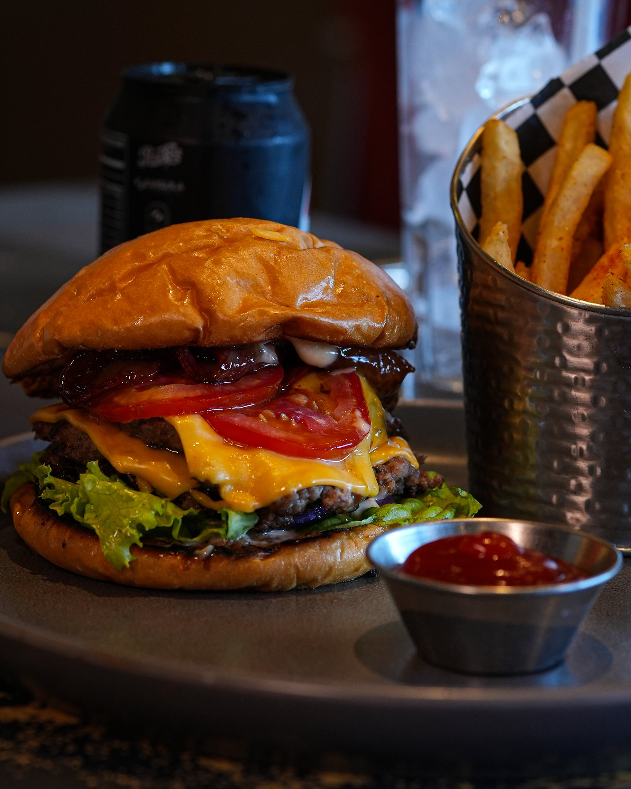
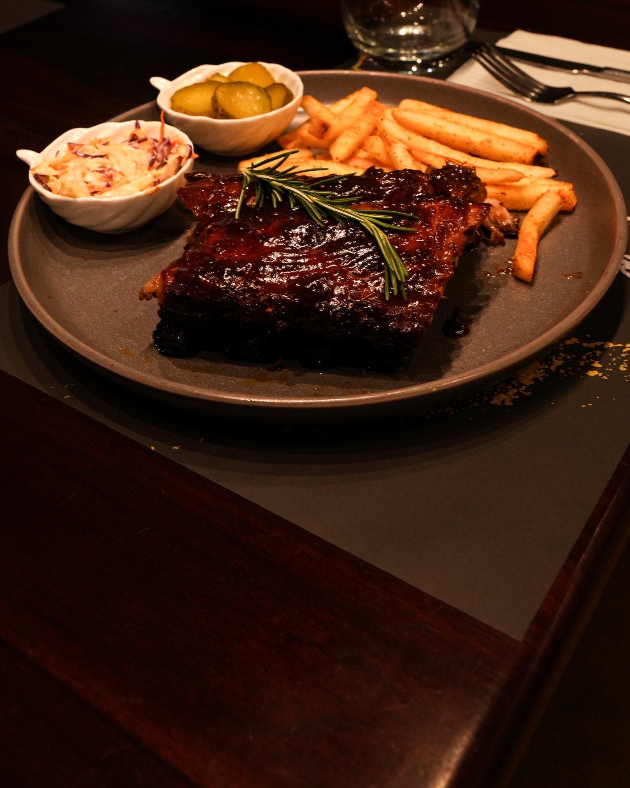

San Pedro Sula
Mon Ami · Bistro Bar
Se está sirviendo
ahora.
Para compartir
Tacos de arrachera
A fuego lento
Costillas BBQ
El favorito de la casa
Mar y tierra
Esta noche
Y la mesa
se llena.
Reservá antes que se llene.
9466 2727
Plaza Paseo Próceres